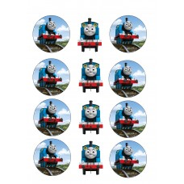
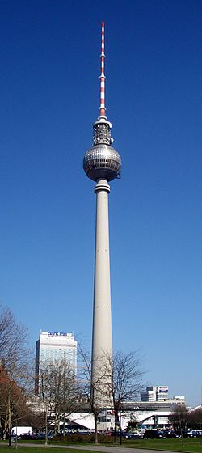

paveikslėlis - išsamiai DELFI.lt
- Pasirinktas paveikslėlis išduos, ką reikia pakeisti, kad ...
Pasirinktas paveikslėlis išduos, ką reikia pakeisti, kad būtumėte laimingas. 21 liepos, 2020. Kartais būna, kai nežinome, kur einame, ir ar šis kelias teisingas. Gerai turėti tokias abejones, užduoti tokius klausimus, tik tokiu būdu galite būti laimingas. - Paveiksliukai - Website of lavinamukai
Paveikslėlis ~ 4 balandžio, 2016 ~ Inga Banionytė ~ Komentarų: 3 Koks saldus tas žodis „svajonė“. Ji nuspalvina gyvenimą pačiomis gražiausiomis spalvomis ir suteikia jam įdomumo. - Paveikslėlis – Vilties Šviesa
Posts about Paveikslėlis written by andriusirtautas. Privatumas ir slapukai: Šis tinklalapis naudoja slapukus. Toliau lankydamiesi šiame tinklalapyje, Jūs sutinkate su slapukų naudojimu. - Paveikslėlis – korsigita
Paveikslėlis • Publikuota 2018-04-06 2020-03-19 sukurta Skanėstai Cronut – nuostabios spurgos su įdaru Paveikslėlis • Publikuota 2018-03-20 2018-03-20 sukurta Skanėstai - Paveikslėlis | Formatai | ekoistės
Posts about Paveikslėlis written by Skanėstai. Privatumas ir slapukai: Šis tinklalapis naudoja slapukus. Toliau lankydamiesi šiame tinklalapyje, Jūs sutinkate su slapukų naudojimu. - Paveikslėlis | Formatai | Minčių kelionė aplink pasaulį
Čia pateikiami visi straipsniai ir naujienos apie paveikslėlis publikuoti DELFI.LT portale. Foto, video reportažai, komentarai, specialistų apžvalgos. - Paveikslėlis. Pažiūrėkit kitaip
2 paveikslėlis. Jūs nesate įpratęs prie įprastų darbų. Esate aktyvaus gyvenimo būdo žmogus, mėgstantis teigiamas emocijas, o jūsų socialumas padaro jus bet kurios kompanijos lyderiu. Jums nepatinka nuobodžiauti, todėl karantinas jus labai erzina. - Paveikslėlis – Šilutės sekretai
Posts about Paveikslėlis written by Vilties Šviesa. Kviečiami dalyvauti visi norintys pasisemti naujų žinių apie vaikų auklėjimą, tėvai, ieškantys naujų būdų kaip pagerinti santykius su savo paaugliais, kaip spręsti kylančius sunkumus, pasidalinti gerąja patirtimi bei įgyti praktinių pozityvios tėvystės įgūdžių. - Paveikslėlis – Mano tikras gyvenimas
Posts about Paveikslėlis written by korsigita. korsigita. Tinklaraštis specialiesiems pedagogams, tėvams, auginantiems specialiųjų poreikių turinčius vaikus, klausos negalę turinčių žmonių bendruomenei ir visiems tiems, kurie mėgsta ugdymo naujoves - Paveikslėlis – SKANĖSTAI
Posts about Paveikslėlis written by a.c. Privatumas ir slapukai: Šis tinklalapis naudoja slapukus. Toliau lankydamiesi šiame tinklalapyje, Jūs sutinkate su slapukų naudojimu.

Spalio 29 d., ketvirtadienis | Vilnius 12 Kaunas 11 Klaipėda 12 Šiauliai 9 Panevėžys 11 Alytus 12 Nida 10 Raseiniai 9 Utena 11 Mažeikiai 9 Biržai 11 Kėdainiai 11 Kiti miestai Paieška | Pranešti naujieną | LT RU EN | Reklama Kontaktai | Statistika | + Apie Delfi plius Prisijungti Naujausios Skaitomiausios Lietuvoje Sportas Orai Kriminalai Užsienyje Veidai Horoskopai Gyvenimas Mokslas Verslas Daugiau Sveikata Kultūra Auto M360 Politiko akimis Jaunimas Pilietis Nuomonių ringas Multimedija Teisė Medijos Karas Propaganda PT Melo detektorius Demaskuok Ačiū už pamokas Temos | Delfi Video
Naujienos
Naujausios Skaitomiausios Lietuvoje Sportas Kriminalai Užsienyje Veidai GyvenimasVerslas Mokslas Kultūra Sveikata Auto Pilietis Miestai M360 Politiko akimis
Delfi Video
Tiesioginės transliacijos Delfi Diena Delfi Dėmesio centre LaidosNaudinga
Orai Horoskopai Receptai TV Programa Valiutų kursaiDelfi projektai
Multimedija Idėja Lietuvai Kablys Smalsūs EP Atsakingas požiūris Atgal į gyvenimąDelfi kanalai
Agro Būstas Moterys Šeima Kelionės Grynas Stilius Maistas Letena Karjera Bored Panda Sek DelfiMobilusis Delfi
Naujausios žinios Naujienų temos Delfi Temos paveikslėlis
paveikslėlis
Socialiniai tinklai savo nuožiūra šalina vis daugiau žinučių: kuo tai gali baigtis?
Technologijų milžinės šalina vis daugiau žinučių, tačiau ar jų sprendimai, ką šalinti, geri?
„Sirenos“ įsibėgėjo: Dariaus Gumausko „Emigrantai“ apsigyvens SODAS 2123 balkone
Festivalis „Sirenos“ persikėlė į antrąją pusę. Šiandien, rytoj ir poryt (spalio 5-7 d.) kultūros komplekso SODAS 2123 balkone „Sirenos“...
Tik turintys erelio žvilgsnį įžiūrės šiuose paveikslėliuose trimatį vaizdą (58) 105
Optinės iliuzijos – savotiškas mūsų smegenų pokštas. Jei žiūrint į paveikslėlį neaišku, ką matote, veikiausiai susidūrėte su stereograma....
Norite sužinoti, kaip dirba Pentagonas? Išbandykite šį stalo žaidimą
Naujas žaidimas, kuris buvo sukurtas padėti JAV vyriausybei parašyti 2018 m. Nacionalinę gynybos strategiją, atskleidžia, kas nutinka, kai reikia...
Gilyn į Rusiją: nuosmukis specialiai Delfi (1)
Delfi tarptautinis dviejų reporterių projektas „Gilyn į Rusiją“. Publikuotas 2015-05-27, kviečiame prisiminti. Daug mačiusiame kelyje...
Pokalbis su Živile Zablackaite apie rašymą, scenarijus ir kitas atvirumo formas
Išsirinkite paveikslėlį ir sužinosite, kokie vaikystės dalykai jums trukdo gyventi (25) 106
Virtualios atakos prieš vaikus: ką reikia žinoti tėvams (2)
Ši optinė iliuzija vadinama viena sudėtingiausių: užduotį įveikti sugeba retas (226) 437
Buvau vos 26-erių. Niekas negalėjo patikėti, kad man smegenų vėžys (12)
Nematomi socialinių tinklų vartotojai
Nauja analizė dėl koronaviruso: įvertino, koks scenarijus Lietuvai būtų geriausias ir blogiausias (45)
Ką veikti su vaiku namuose? 10 būdų, kaip prasmingai leisti laiką su vaiku!
Melo detektoriusNe, diegiant 5G mobiliojo ryšio antenas nuo radiacijos saugantis kostiumas nereikalingas (108)
Linas Kojala. #51PandemijosDiena: eurozonai atsigauti prireiks 3 metų (35)
Dovilės Filmanavičiūtės karjeroje – naujas etapas (11)
Linas Kojala. #COVID19 #45PandemijosDiena: Kinijos dezinformacija ir kas vyksta Švedijoje (49)
Melo detektoriusĮvardijo keturis koronaviruso apokalipsės raitelius: pėdsakai veda į žinomą Trumpo propagandos portalą (182)
Apie depresiją prabilęs atlikėjas RPTLE sudėtingiausią savo gyvenimo etapą įamžino dainoje: šešėliai yra buvimo žmogumi dalis
„Saulėlydžio“ saga buvo pilna logikos klaidų ir net akyliausiems sunkiai įžiūrimų įdomių detalių: ar jas pastebėjote? (7)
Linas Kojala. #39PandemijosDiena: ispanų vaikai galės išeiti į lauką, o Rusijoje – naujų užsikrėtimo atvejų rekordas (41)
Trečdalis gyvenimo. Nuo 1991-ųjų lapkričio iki dabar II dalis (1)
Ieškantiems vidinės ramybės: Yoko Ogawa knygos „Begalinė lygtis“ ištrauka
Pirmąkart Lietuvoje vyks „Memų festivalis“: atvyks ir interneto fenomenu tapęs „Hide the Pain Harold“ (1)
Garsių siaubo filmų prodiuseriai naujame trileryje „Košmarų sala“ parodys, kaip svajonės gali nuvesti ir į pragarą
Gyvas kaimasJaunojo ūkininko darbai – nuo mėsinių avių iki krapų dalybų (4)
Vaizdo turinio kūrimas – prabanga ar neišvengiamybė?
Kaip tapti „virusu“ socialiniuose tinkluose?
Originalios idėjos, kaip švęsti Naujuosius metus, jei neseniai susilaukėte kūdikio (8)
Pasidalink piliečio istorijaDidinga praeitis, bet niūri dabartis: Lietuvos miestelis, kuris laukia atgimimo (42) 187
1 2 3 4 5 6 7 8 9 10 | Populiariausi straipsniai ir video Sekite DELFI REKLAMA KONTAKTAI PRIVATUMAS KARJERA en.delfi.lt ru.delfi.lt pl.delfi.lt delfi.ee rus.delfi.ee delfi.lv ru.delfi.lv UAB DELFI Gynėjų g. 16, 01109 Vilnius +37052045400 info@delfi.lt © 1999-2020 DELFI. Visos teisės saugomos .



Mauris vulputate dolor
Rutrum fermentum nibh in augue praesent urna congue rutrum.
Etiam posuere